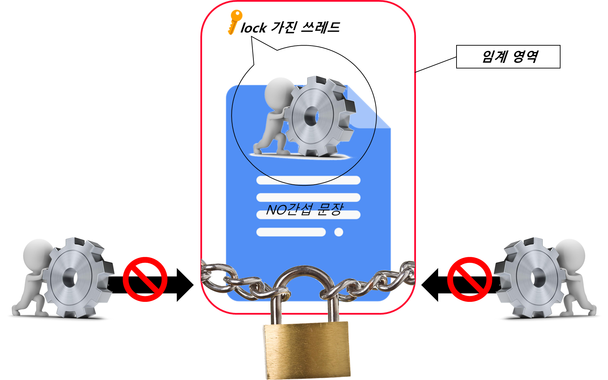
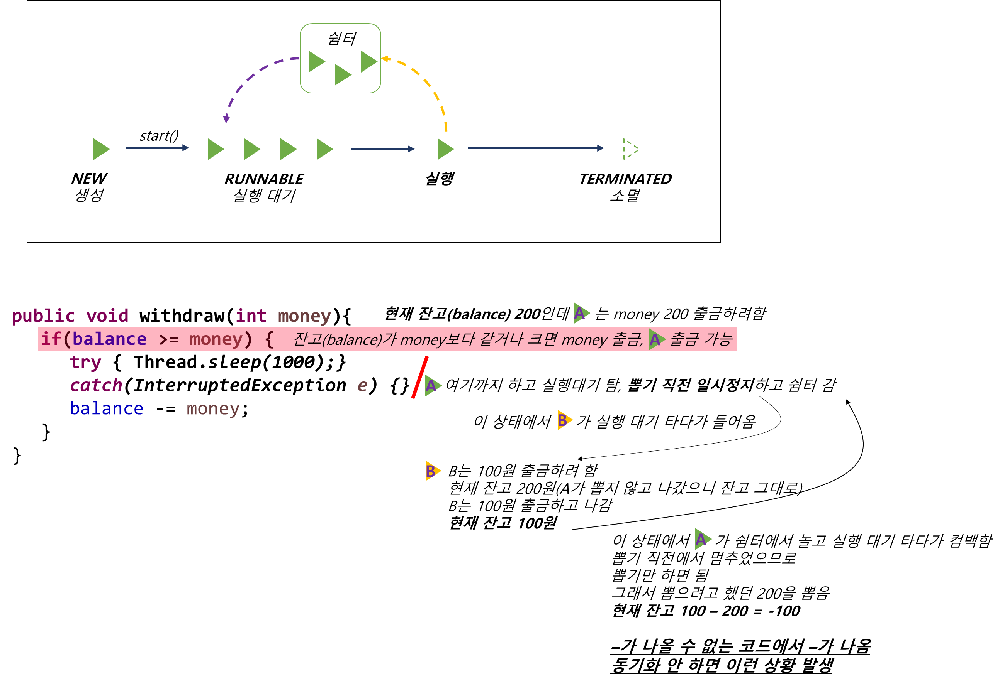

Ch13-30~33. synchronized
0. 목차
Chapter13. 쓰레드
Ch13 - 30. 쓰레드의 동기화(synchronization)
Ch13 - 31. synchronized를 이용한 동기화
Ch13 - 32. synchronized를 이용한 동기화 예제1
Ch13 - 33. synchronized를 이용한 동기화 예제2
Ch13 - 30. 쓰레드의 동기화(synchronization)
▶ 쓰레드의 동기화(synchronization)란?
▷ 멀티 쓰레드 프로세스에서는 다른 쓰레드의 작업에 영향을 미칠 수 있음
- 멀티 쓰레드 프로세스에서는 여러 쓰레드가 같은 자원을 공유 메모리도 공유
- 쓰레드A가 메모리를 사용하고 있는데 쓰레드B가 이걸 빼앗으면?
- 멀티 쓰레드는 이렇듯 다른 쓰레드의 작업에 영향을 미칠 수 있음
▷ 진행 중인 작업이 다른 쓰레드에게 간섭받지 않게 하는 것 = 동기화
▷ 동기화하려면 간섭받지 않아야 하는 문장들을 ‘임계 영역’으로 설정
- 임계 영역(critical section)
▷ 임계 영역은 lock을 얻은 단 하나의 쓰레드만 출입가능(1객체 1락)

Ch13 - 31. synchronized를 이용한 동기화
▶ synchronized란?
▷ synchronized로 임계 영역(lock 걸리는 영역)을 설정하는 데 사용하는 키워드
▶ 임계 영역의 범위와 개수
▷ 임계 영역의 범위와 개수는 최소화로 설정
▷ 임계 영역이 많을 수록 성능 저하
- 멀티 쓰레드의 장점은 동시에 여러 기능이 가능한 것
- 그런데 임계 영역은 한 번에 한 쓰레드만 처리 가능
▶ synchronized로 임계 영역을 설정하는 2가지 방법
▷ 메서드 전체를 임계 영역으로 지정
// ♡
public synchronized void calcSum() {
...
}
// ♥
// ♡ ~ ♥ : 임계 영역
▷ 예시
// ♡
public synchronized void withdraw(int money) {
if (balance >= money) {
try {
Thread.sleep(1000);
} catch(Exception e) { }
balance -= money;
}
}
// ♥
// ♡ ~ ♥ : 임계 영역
▷ 특정한 영역을 임계 영역으로 지정
// ♡
synchronized(객체의 참조변수) {
...
}
// ♥
// ♡ ~ ♥ : 임계 영역
▷ 예시
public void withdraw (int money) {
synchronized (this) { // ♡
if (balance >= maney) {
try {
Thread.sleep(1000);
} catch(Exception e) { }
balance -= money;
}
} // ♥
}
// ♡ ~ ♥ : 임계 영역
Ch13 - 32. synchronized를 이용한 동기화 예제1
▶ 동기화 하지 않고 출금하기
▷ 잔금이 츨금보다 클 때만 출금가능
▷ 잔금 - 출금 = +
▷ 하지만 동기화 하지 않으면 마이너스 통장도 아닌데 잔고가 -
class Ex13_12 {
public static void main(String args[]) {
Runnable r = new RunnableEx12();
new Thread(r).start(); // ThreadGroup에 의해 참조되므로 gc대상 아님
new Thread(r).start(); // ThreadGroup에 의해 참조되므로 gc대상 아님
}
}
class Account {
private int balance = 1000; // balance : 잔고
public int getBalance() {
return balance;
}
public void withdraw(int money){
if(balance >= money) {
try { Thread.sleep(1000);} catch(InterruptedException e) {}
balance -= money;
}
} // withdraw
}
class RunnableEx12 implements Runnable {
Account acc = new Account();
public void run() {
while(acc.getBalance() > 0) {
// 100, 200, 300중의 한 값을 임의로 선택하여 출금(withdraw)
int money = (int)(Math.random() * 3 + 1) * 100;
acc.withdraw(money);
System.out.println("balance:"+acc.getBalance());
}
} // run()
}
// console
balance:900
balance:900
balance:700
balance:400
balance:100
balance:100
balance:100
balance:-100 // ?? 마이너스 통장도 아닌데 -가 왜 나와??
balance:-200 // ?? 마이너스 통장도 아닌데 -가 왜 나와??

Ch13 - 33. synchronized를 이용한 동기화 예제2
▶ 동기화 하고 출금하기
▷ - 잔고 출력되지 않음
class Ex13_13 {
public static void main(String args[]) {
Runnable r = new RunnableEx13();
new Thread(r).start();
new Thread(r).start();
}
}
class Account2 {
private int balance = 1000; // private으로 해야 동기화가 유의미 함 : 지정 쓰레드 외엔 못 들어오게 했는데 외부에서 접근 가능하면 안됨
public synchronized int getBalance() { // 읽어 오는 과정 부터 동기화 해야 함, 읽을 때 다른 거 읽어오면 안되니까
return balance;
}
public synchronized void withdraw(int money){ // synchronized로 메서드를 동기화
if(balance >= money) {
try { Thread.sleep(1000);} catch(InterruptedException e) { }
balance -= money;
}
} // withdraw
}
class RunnableEx13 implements Runnable {
Account2 acc = new Account2();
public void run() {
while(acc.getBalance() > 0) {
// 100, 200, 300중의 한 값을 임으로 선택해서 출금(withdraw)
int money = (int)(Math.random() * 3 + 1) * 100;
acc.withdraw(money);
System.out.println("balance:"+acc.getBalance());
}
} // run()
}
// console
balance:700
balance:400
balance:100
balance:0
balance:0